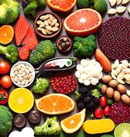

វីតាមីន B12 គឺជាវីតាមីនរលាយក្នុងទឹក។ ភាគច្រើនត្រូវបានគេរកឃើញនៅក្នុងអាហារដូចជា សាច់ ត្រី ស៊ុត ទឹកដោះគោ ថ្លើម។ ល។ វីតាមីននេះត្រូវបានចាត់ទុកថាជាវីតាមីនមានប្រយោជន៍ក្នុងការពង្រឹងការលូតលាស់ និងមុខងារនៃប្រព័ន្ធសរសៃប្រសាទ និងជំរុញការបង្កើតកោសិកាឈាម។
វីតាមីន B12 គឺជាវីតាមីន ដែលរលាយក្នុងទឹក មានអត្ថប្រយោជន៍ចំពោះសុខភាពយ៉ាងខ្លាំង ពិសេសជួយដល់មុខងារប្រព័ន្ធប្រសាទ ការផលិត DNA ការបង្កើតកោសិកាគ្រាប់ឈាមក្រហម ជួយឲ្យស្បែកភ្លឺ ជំនួយភ្នែក និងជួសជុលមុខងារខូចខាតរបស់ខួរក្បាលឲ្យល្អប្រសើរឡើងវិញ។

វីតាមីន B12 ដែលស្រូបបានពីរបបអាហារត្រូវបានរក្សាទុកក្នុងថ្លើម ប្រសិនបើយើងប្រើមិនអស់នោះវានឹងអាចរក្សាទុកប្រើនៅពេលក្រោយទៀត។ យើងអាចរកបាន វីតាមីន B12 មាននៅរបបអាហារដូចជា៖
-គ្រឿងក្នុងសត្វ
-សាច់គោ
-អាហារសមុទ្រ
-ត្រីទឹកសាប
-ស៊ុត
-ពពួកផលិតផលទឹកដោះជាដើម។
បើយោងតាមការចុះផ្សាយរបស់ សេវាកម្មសុខភាពជាតិនៃប្រទេសអង់គ្លេស (NHS)បានឲ្យដឹងថា ប្រសិនបើរបបអាហារដែលយើងបានញ៉ាំរាល់ថ្ងៃមានទៅដោយពពួកសាច់ ត្រី ផលិតផលទឹកដោះគោ ជាប្រចាំនោះរាងកាយរបស់យើងអាចទទួលបានវីតាមីន B12 គ្រប់គ្រាន់។ ប៉ុន្ដែចំពោះរបបអាហារមួយចំនួន ដូចជាពពួកបន្លែធម្មជាតិ ផ្លែឈើ គឺមិនអាចផ្ដល់វីតាមីន B12 គ្រប់គ្រាន់នោះទេ ព្រោះវីតាមីនប្រភេទនេះមានចំនួនតិចបំផុតក្នុងផ្លែឈើ ឬបន្លែ តែមាននៅក្នុងសាច់ច្រើន។ ដូច្នេះវាគឺជាបញ្ហាធំបំផុតសម្រាប់អ្នកដែលតបសាច់ ញ៉ាំតែបន្លែ អាចប្រឈមបញ្ហាកង្វះវីតាមីនB12នេះ។
វីតាមីន B12 (ដែលគេហៅផងដែរថា ខូបាឡាមីន) ដូចនឹងវីតាមីន B ទាំងឡាយផ្សេងទៀតដែរ គឺរលាយនៅក្នុងទឹក1។ ទោះជាយ៉ាងនេះក៏ដោយ វីតាមីននេះមិនត្រូវបានរក្សាទុកតាមធម្មជាតិឡើយ ប៉ុន្តែជំនួសមកវិញ វាត្រូវបានស្រូបដោយរាងកាយអ្នកតាមរយៈការទទួលទានអាហារជាច្រើនមុខ1,2។ ឧទាហរណ៍ អាហារដូចជាសាច់ក្រហម សាច់ត្រី ស៊ុត សេរៀលមានអាហារូបត្ថម្ភ និងផលិតផលធ្វើពីទឹកដោះគោ1,2។ វីតាមីន B12 មានសារៈសំខាន់សម្រាប់ដំណើរការមួយចំនួននៅក្នុងរាងកាយមនុស្ស។ ទាំងនេះរួមមាន៖
1. ការផលិតកោសិកាឈាមក្រហម
សមត្ថភាពរបស់រាងកាយរបស់យើងក្នុងការផលិតកោសិកាឈាមក្រហមរាប់លានជារៀងរាល់នាទីគឺមានការចូលរួមមួយផ្នែកធំ ដោយសារការទទួលទានវីតាមីន B12 គ្រប់គ្រាន់ ដែលជំរុញឱ្យកោសិកាទាំងនេះបំបែកខ្លួនបានយ៉ាងល្អ។
2. ការជំរុញការផលិត DNA
វីតាមីន B12 ធ្វើការរួមគ្នាជាមួយវីតាមីន B មួយទៀត ដែលគេហៅថាវីតាមីន B9 (ត្រូវបានគេស្គាល់ថាជា អាស៊ីត ហ្វូលិក) ដើម្បីបង្កើត ព្យូរីន និង ផៃរីមីឌីន នៅក្នុងរាងកាយអ្នក1។ ព្យូរីន និង ផៃរីមីឌីន គឺជាមូលដ្ឋាននីដ្រូសែន ដែលបង្កើតជាបណ្ដុំនៃ DNA នៅក្នុងរាងកាយមនុស្ស4។